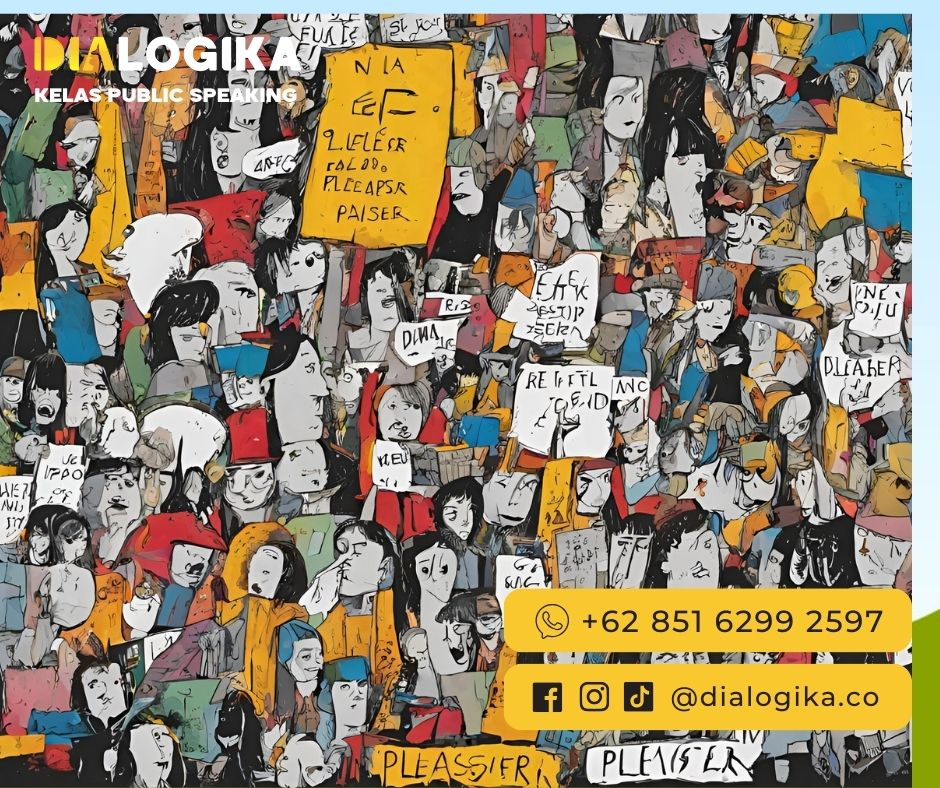

Berani Bilang 'Tidak', Stop Being A People Pleaser! Ini 5 Caranya!
Berani Bilang Tidak - Hai Sobat Dialogi! Pernah enggak kamu menghadapi situasi seperti ini?
Bersikap pura-pura setuju, padahal sebenarnya kamu tidak setuju,
Berusaha mencari validasi atau pengakuan dari orang lain,
Terlalu sering meminta maaf untuk hal yang sebenarnya tidak perlu atau seringkali menyembunyikan perasaan terluka?
Jika jawabanmu adalah "YA," ini kemungkinan besar menunjukkan bahwa kamu adalah seorang "People Pleaser."
Fenomena ini adalah penggambaran bagi seseorang yang selalu berusaha keras untuk membuat orang lain senang, meskipun harus mengorbankan keinginannya sendiri.
Kita tahu, Sebagian besar orang ingin merasa dicintai dan dihargai, terutama dalam hubungan yang dekat. Ini wajar! karena manusia adalah makhluk sosial.
Altruisme atau keinginan untuk membantu orang lain, adalah ciri khas lainnya dalam manusia.
Namun, kamu perlu tahu bahwa perilaku People Pleaser ini sebenarnya merupakan hasil dari citra diri yang negatif . Selain itu, perilaku ini dapat memiliki dampak buruk dalam jangka panjang.
People Pleasure Justru Merugikan

Pada tahun 2016, ada penelitian yang dipublikasikan di jurnal Frontiers in Human Neuroscience.
Hasil penelitiannya mengungkapkan sesuatu yang menarik yakni orang yang susah menolak permintaan orang lain punya pemahaman yang melenceng soal kebahagiaan.
Mereka pada umumnya berpikir bahwa kebahagiaan itu datangnya dari persetujuan orang lain.
Ini masalahnya!
Sejatinya kebahagiaan seharusnya berasal dari dalam diri kita sendiri, bukan dari persetujuan orang lain.
Contoh
Bayangkan ada seorang wanita bernama Lita yang selalu berusaha keras untuk disukai oleh teman-temannya. Setiap kali ada rencana atau aktivitas, dia selalu menyesuaikan diri dengan keinginan orang lain, bahkan jika itu bukan sesuatu yang dia nikmati.
Suatu hari, teman-temannya mengajaknya untuk pergi ke acara olahraga yang sebenarnya tidak disukai oleh Lita. Meskipun dia tidak tertarik, dia setuju untuk bergabung karena takut akan reaksi teman-temannya jika dia menolak.
Namun, setelah acara berakhir, lita merasa tidak bahagia dan bahkan sedikit frustasi. Dia menyadari bahwa dia mengorbankan kebahagiaannya sendiri hanya untuk mendapatkan persetujuan dari orang lain.
Maka, Ketika seseorang terlalu menggantungkan kebahagiaan pada apa yang orang lain pikirkan, mereka rentan mengalami stres, kekecewaan, dan kelelahan emosional.
Memang People Pleaser terlihat seperti tindakan yang patut dihargai, tapi justru perilaku people pleaser yang berlebihan dapat merugikan kesejahteraan emosional dan psikologis diri sendiri.
"Jangan biarkan keinginan untuk menyenangkan orang lain membuat Anda kehilangan jati diri Anda sendiri."
John Wooden
Kenapa Orang Bisa Jadi ‘People Pleaser’?
Mengutip dari Medical News Today Ada beberapa faktor yang menyebabkan hal ini , diantaranya;
1. Rendahnya Self-Esteem
Seseorang yang merasa harga dirinya rendah dibandingkan dengan yang lain akan merasa bahwa apa yang mereka butuhkan itu tidak penting. Mereka cenderung tidak terlalu keras bicara tentang apa yang mereka inginkan. Dan mungkin mereka juga bisa kehilangan arah jika tidak bisa membantu orang lain
2. Memiliki Anxiety
Beberapa orang bisa mencoba menyenangkan orang lain karena mereka merasa gugup tentang bergaul, takut akan penolakan, atau khawatir melukai hati orang lain.
3. Ketakutan akan konflik
Orang yang takut akan konflik, atau merasa bahwa mereka harus menghindarinya, mungkin menggunakan perilaku mengejar kesenangan orang lain sebagai cara untuk mencegah perselisihan.
4. Adanya Gangguan Kepribadian
Gangguan kepribadian adalah kondisi mental yang berlangsung lama, dan beberapa di antaranya dapat menghasilkan perilaku yang selalu persetujuan orang lain.
Sebagai contoh, gangguan kepribadian tergantung (dependent personality disorder/DPD) membuat seseorang sangat bergantung pada orang lain untuk bantuan dan persetujuan dalam berbagai aspek kehidupan mereka, termasuk keputusan-keputusan sehari-hari seperti pemilihan pakaian.
5. Trauma
Penelitian terbaru menunjukkan bahwa orang merespons peristiwa traumatis seperti pelecehan dengan berbagai cara termasuk respons ekstrem seperti perilaku "menyenangkan" untuk mendapatkan kasih sayang dan penghargaan dari orang-orang yang mereka takuti demi bertahan hidup.
Keluar dari Peran People Pleaser dengan Berkata ‘Tidak’
Perlu di ingat! Bahwa salah satu langkah penting untuk keluar dari peran ‘People Pleaser’ adalah belajar mengatakan ‘Tidak’.
Ini Sulit, tapi sangat penting untuk menjaga kesimbangan dalam hidup
Berikut tips yang bisa kamu coba, agar lebih berani bilang ‘Tidak’;
1. Buat Respon Sederhana
Jika kamu tidak bisa melakukan sesuatu yang diminta orang, lebih baik kamu bilang jujur pada mereka.
Terkadang, jika kita bilang "mungkin," kita akan diminta memberikan penjelasan yang lebih detail.
2. Beri Diri Sendiri Waktu
Jika kita masih kesulitan mengatakan 'tidak' kepada permintaan orang lain, coba berikan diri kita waktu sejenak untuk berpikir dan mengingat alasan mengapa kita perlu mengatakan 'tidak'.
Setelah melakukannya, kita akan merasa lebih percaya diri dan lebih berani untuk menolak.
3. Pisahkan Dua Jenis Penolakan
Coba sampaikan kepada orang lain bahwa ketika kita menolak permintaan, itu bukan berarti kita tidak peduli pada mereka yang meminta bantuan. Terkadang kita merasa sulit menolak karena tidak ingin membuat mereka merasa tidak nyaman
Dengan mengkomunikasikan hal ini, kita akan merasa lebih baik saat menolak dengan alasan yang jelas dan tidak menyakiti perasaan orang lain.
4. Jujur pada Keadaan
Beberapa orang ingin orang lain memahami mereka, tetapi mereka enggan untuk secara jujur mengungkapkan situasi yang sedang mereka hadapi. Kata "tidak" sebenarnya bukanlah kata yang buruk untuk diucapkan.
Dengan berbicara secara jujur dan terbuka, kemungkinan besar penolakan yang kita sampaikan akan lebih mudah diterima oleh orang yang meminta pertolongan kepada kita
5. Introspeksi Diri
Sebelum menolak, introspeksi mengapa kita ingin membantu seseorang. Apakah itu untuk meringankan beban mereka atau hanya untuk memenuhi kepuasan pribadi.
Jika motif kita hanya untuk kepuasan pribadi, kita mungkin akan berharap berlebihan pada orang tersebut dan merasa kecewa jika harapan itu tidak terpenuhi. Dalam konteks seperti ini, lebih baik ungkapkan ‘Tidak'.
"Seseorang yang bisa mengatakan 'Tidak' dengan percaya diri sebenarnya lebih kuat daripada seseorang yang selalu mengiyakan."
Wayne Dyer
Kesimpulan
Berkata "Tidak" penting untuk menghindari menjadi "People Pleaser" yang merugikan diri sendiri. Kita harus menyadari bahwa kebahagiaan seharusnya datang dari dalam diri kita, bukan hanya dari persetujuan orang lain.
Dengan beberapa tips, seperti memberi diri waktu dan berbicara jujur, kita bisa belajar mengatakan "Tidak" dengan tepat.